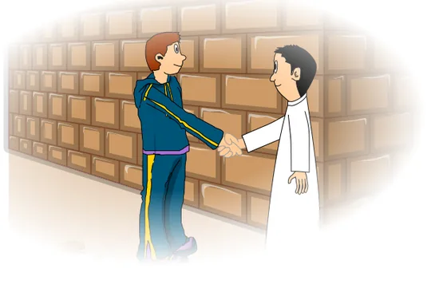
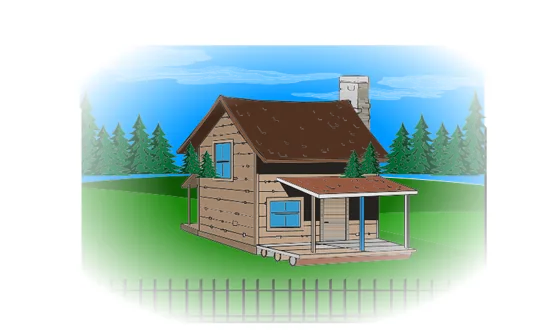
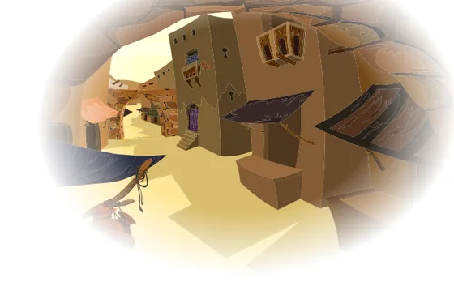

التوابع: البدل بأنواعه
الدرس 3 من 5 — التراكيب
أُلاحظ
أقرأ الأمثلة وأستمع إليها، وألاحظ الكلمات الملوّنة.
- سَلَّمْتُ عَلَى صَدِيقِي مُحَمَّدٍ
- أَعْجَبَنِي الْبَيْتُ حَدِيقَتُهُ
- أَكَلْتُ الرَّغِيفَ نِصْفَهُ
- أُحِبُّ الْأَحْيَاءَ الشَّعْبِيَّةَ بَسَاطَتَهَا
أستنتج
البدلتابعٌ مقصودٌ بالحكم، ويوافق متبوعه (المبدل منه) في إعرابه: رفعاً ونصباً وجرّاً.
مرفوعمنصوبمجروراضغط على الكلمة الملوّنة لترى إعرابها، وعلى 🔊 لتستمع.
أنواع البدل
- البدل المطابق ويُسمّى أيضاً بدلَ الكلّ من الكلّ، وهو ما كان البدل فيه هو المبدل منه نفسه.

سَلَّمْتُ عَلَى صَدِيقِي مُحَمَّدٍ - بدل بعضٍ من كلّ وهو ما كان البدل فيه جزءاً من المبدل منه، ويجب أن يشتمل البدل على ضميرٍ يعود على المبدل منه.

أَعْجَبَنِي الْبَيْتُ حَدِيقَتُهُأَكَلْتُ الرَّغِيفَ نِصْفَهُ - بدل الاشتمال وهو ما كان البدل فيه من متعلّقات المبدل منه، ويجب أن يشتمل البدل على ضميرٍ يعود على المبدل منه.

أُحِبُّ الْأَحْيَاءَ الشَّعْبِيَّةَ بَسَاطَتَهَا - بدل التفصيل وهو فرعٌ من البدل المطابق، وهو ذكرُ أجزاء المبدل منه وأقسامه.الْكَلِمَةُ: اسْمٌ وَفِعْلٌ وَحَرْفٌ.
أُطبّق
بيّن نوع البدل في الجمل التالية:
1نوع البدل في: «جنّبك اللهُ الأمرّين: الجوعَ والعُريَ»
2نوع البدل في: «يُقَلِّمُ الْبُسْتَانِيُّ الْأَشْجَارَ أَغْصَانَهَا الزَّائِدَةَ»
3نوع البدل في: «أَعْجَبَنِي الطَّالِبُ أَدَبُهُ»
4نوع البدل في: «كِتَابُ الْكَامِلِ لِأَبِي الْعَبَّاسِ الْمُبَرِّدِ»
5اختر الصحيح: «قَرَأْتُ الْكِتَابَ …»
6اختر الصحيح: «سَلَّمْتُ عَلَى أَخِيكَ …»
إجابات صحيحة من أول محاولة:
أتمرّن أكثر
أستمع، ثمّ أرتّب الكلمات لأكوّن الجملة:
أستمع، ثمّ أكتب ما أسمع:
✓ أنهيتَ هذا الدرس
دروس العربية — للاستعمال التعليمي.